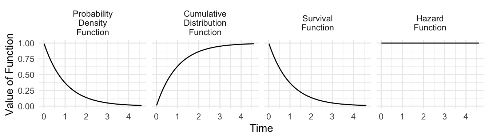

Exponential
An Exponential survival model is a Generalized Linear Model just like logistic regression (previous page). We will estimate this model by writing down the log likelihood and carrying out numerical optimization with optim. As with the previous model, we will recover estimates that match those produced by canned functions.
As a reminder, the Exponential(1) distribution looks like this:
Without predictors
Assume a data generating process of \(n\) independent observations.
- \(t_1,\dots,t_n\sim\text{Exponential}(\lambda)\) are event times
- \(\tilde{t}_1,\dots,\tilde{t}_n\) are observation times (either events or censoring)
- \(c_1,\dots c_n\) indicate whether an observation is censored (\(c_i = 1\)) or the event occurs (\(c_i = 0\))
The code below will simulate data with \(\lambda = 1\) and censoring at \(t = 3\).
simulated <- tibble(id = 1:1000) |>
mutate(
# Exponential draws
t = rexp(n()),
# Trial cuts off at time 3
c = t > 3,
# Observed y is truncated at 3
t_tilde = ifelse(t > 3, 3, t)
)One-parameter likelihood in math
Let \(f(t,\lambda)\) be the PDF of the exponential distribution. Let \(F(t,\lambda)\) be the CDF. The likelihood is the probability of observing the data if the parameter takes the value \(\lambda\). The observed data either tells us:
- an event occurred at time \(t\) (uncensored)
- occurs with probability density \(f(t\mid\lambda)\)
- an event occurred at time greater than \(t\) (censoring)
- occurs with probability \(1 - F(t\mid\lambda)\)
Translating to math, the likelihood for a given observation is \[ \underbrace{\left(f(\tilde{t}_i\mid\lambda)\right)^{1-c_i}}_{\text{PDF at }\tilde{t}_i\text{ if uncensored}}\quad\times\quad \underbrace{\left(1 - F(\tilde{t}_i\mid\lambda)\right)^{c_i}}_{\text{Survival past }\tilde{t}_i\text{ if censored}} \]
We can put these together into a likelihood function for the vector of independent observations, \[ L(\vec{\tilde{t}},\vec{c}\mid\lambda) = \prod_i \left(f(\tilde{t}_i\mid\lambda)\right)^{1-c_i}\left(1 - F(\tilde{t}_i\mid\lambda)\right)^{c_i} \] and take the log to get the log likelihood. \[ \ell(\vec{\tilde{t}},\vec{c}\mid\lambda) = \sum_i \left((1-c_i)\log[f(\tilde{t}_i\mid\lambda)] + c_i\log[1 - F(\tilde{t}_i\mid\lambda)]\right) \]
One-parameter likelihood in code
Write the log likelihood as a function in R.
log_likelihood <- function(log_lambda, data) {
data |>
mutate(
likelihood_i = case_when(
c == 0 ~ dexp(t_tilde, rate = exp(log_lambda)),
c == 1 ~ pexp(t_tilde, rate = exp(log_lambda), lower.tail = FALSE)
)
) |>
summarize(
log_likelihood = sum(log(likelihood_i))
) |>
pull(log_likelihood)
}One-parameter optimization
Using optim, we can numerically find the value \(\hat\lambda\) that maximizes the log likelihood function.
optimize.out <- optimize(
log_likelihood, # function to optimize
lower = -1, # lower limit of log_lambda candidates
upper = 1, # upper limit of log_lambda candidates
maximum = TRUE, # search for maximum
tol = .01, # get within tol of truth
data = simulated # other argument to log_likelihood
)Remember that we set our parameter to be the log of the rate \(\lambda\). Thus, we need to exponentiate the estimated parameter.
log_lambda_hat <- optimize.out$maximum
lambda_hat <- exp(log_lambda_hat) |> print()[1] 1.023873With predictors
Now consider the setting where \(\lambda_i\) varies across units \(i\) according to a Generalized Linear model, \[ \begin{aligned} y_i&\sim\text{Exponential}(\lambda_i) \\ \log(\lambda_i) &= \vec{X}_i\vec\beta \end{aligned} \]
The code below generates data to illustrate with two predictors, \(X_1\) and \(X_2\).
simulated <- tibble(id = 1:1000) |>
mutate(
x1 = rnorm(n()),
x2 = rnorm(n()),
lambda = exp(-1 + .5 * x1 + .5 * x2),
t = rexp(n(), rate = lambda),
# Create censoring at time 3
c = t > 3,
t_tilde = ifelse(t > 3, 3, t)
) |>
select(x1, x2, c, t_tilde)Vector-parameter likelihood in math
The likelihood has not changed much from the case without predictors. The \(\lambda\) terms become \(\lambda_i\), \[ \ell(\vec{\tilde{t}},\vec{c}\mid\vec\lambda) = \sum_i \left((1-c_i)\log[f(\tilde{t}_i\mid\lambda_i)] + c_i\log[1 - F(\tilde{t}_i\mid\lambda_i)]\right) \]
and when coding this we will use the assumption that \(\lambda_i = \text{exp}(\vec{X}_i\vec\beta)\).
Vector-parameter likelihood in code
The log likelihood takes parameters and data and returns a likelihood value. When coding this, it is helpful that the dexp and pexp functions are the PDF and CDF of the Exponential distribution with rate parameter equal to \(\lambda\).
log_likelihood <- function(parameters, data, formula) {
# Parameters are coefficients
beta <- parameters
# Get the X matrix
X <- model.matrix(formula, data = data)
# Calculate lambda values at that parameter vector
lambda <- exp(X %*% beta)
# Calculate the likelihood
data |>
# Create a column with the lambda values for each case
mutate(lambda = lambda) |>
summarize(
# Use the formula from above, translated to code
log_likelihood = sum(
(1 - c) * log(dexp(t_tilde, rate = lambda)) +
c * log(1 - pexp(t_tilde, rate = lambda))
)
) |>
# Pull the log likelihood value to return
pull(log_likelihood)
}Vector-parameter optimization
Now optimize with a call to optim.
optim.out <- optim(
par = c(0,0,0), # initial parameter values
fn = log_likelihood, # function to optimize
control = list(fnscale = -1), # find max instead of min
hessian = TRUE, # also return the Hessian
data = simulated, # passed to log_likelihood
formula = formula(t_tilde ~ x1 + x2) # passed to log_likelihood
)We can extract the coefficient estimates.
beta_hat <- optim.out$par |> print()[1] -0.9961967 0.5103690 0.4532207We can extract the Hessian.
hessian <- optim.out$hessianWe can solve for the variance-covariance matrix \(\hat{\text{V}}(\hat{\vec\beta})\): the negative inverse Hessian. In R, the solve function finds the inverse of a matrix.
beta_hat_vcov <- -solve(hessian)This can give us our coefficients and standard errors (the square root of the diagonal of the variance covariance matrix).
tibble(
variable = c("Intercept","x1","x2"),
beta = beta_hat,
se = sqrt(diag(beta_hat_vcov))
)# A tibble: 3 × 3
variable beta se
<chr> <dbl> <dbl>
1 Intercept -0.996 0.0409
2 x1 0.510 0.0418
3 x2 0.453 0.0416We can compare that to the output from logistic regression.
library(survival)
canned_fit <- survreg(
Surv(time = t_tilde, event = 1 - c) ~ x1 + x2,
data = simulated,
dist = "exponential"
)
summary(canned_fit)
Call:
survreg(formula = Surv(time = t_tilde, event = 1 - c) ~ x1 +
x2, data = simulated, dist = "exponential")
Value Std. Error z p
(Intercept) 0.9961 0.0409 24.3 <2e-16
x1 -0.5105 0.0418 -12.2 <2e-16
x2 -0.4532 0.0416 -10.9 <2e-16
Scale fixed at 1
Exponential distribution
Loglik(model)= -1170.9 Loglik(intercept only)= -1300.9
Chisq= 259.98 on 2 degrees of freedom, p= 3.5e-57
Number of Newton-Raphson Iterations: 4
n= 1000 Note that the canned fit is modeling the mean time to event \(\frac{1}{\lambda}\) whereas our fit modeled the rate of events \(\lambda\). Because \(\beta\) coefficients are on the scale of \(\log(\lamda)\), the canned fit estimates are the negative of our DIY estimates.
Simulate predictions
We can simulate predicted the hazard and survival probabilities. Suppose we are interested in the prediction at \((X_1,X_2) = (1,1)\). Define these data to predict,
to_predict <- tibble(x1 = 0, x2 = 1)create an \(X\) matrix at those values
X_new <- model.matrix(~ x1 + x2, data = to_predict)and make predictions from that \(X\) matrix.
lambda_hat <- exp(X_new %*% beta_hat) |> print() [,1]
1 0.5810166We may not just want the hazard: perhaps we want the probability of surviving past time \(t = 2\). Recall that pexp is the CDF, and with the option lower.tail = FALSE it is the survival function.
survival_hat <- pexp(2, rate = lambda_hat, lower.tail = FALSE)To get a standard error on the predictions, we can use simulation. We know that \(\hat{\vec\beta}\) is asymptotically multivariate normal. We can simulate many coefficient vectors \(\vec\beta^*\) from that distribution,
beta_star <- mvtnorm::rmvnorm(n = 1000, mean = beta_hat, sigma = beta_hat_vcov)and we can generate a predicted hazard from each simulated value,
lambda_star <- exp(X_new %*% t(beta_star))and a predicted survival probability
survival_star <- pexp(2, rate = lambda_star, lower.tail = FALSE)The standard error is the standard deviation of these simulated draws.
se_survial_hat <- sd(survival_star)Canned comparison
We can likewise predict with the canned version of the model,
canned_linear_prediction <- predict(
canned_fit,
type = "linear",
newdata = to_predict
)Recall that this package has modeled \(\vec{X}_i\beta = \log(\frac{1}{\lambda_i}\). Thus we need to convert back to \(\lambda\).
canned_lambda_hat <- 1 / exp(canned_linear_prediction)Note that they are approximately the same!
cbind(
diy = lambda_hat[1,1],
canned = canned_lambda_hat
) diy canned
1 0.5810166 0.5810865Advantages of the DIY coding yourself include
- you know exactly how the model worked (e.g., modeling \(\lambda\) vs \(1 / \lambda\))
- you know how to get standard errors for any quantity of interest
- you can generalize to models that are not canned
Exercise
This exercise uses data from a medical trial that tracked survival outcomes of patients receiving heart transplants.
Crowley, J., & Hu, M. (1977). Covariance analysis of heart transplant survival data. Journal of the American Statistical Association, 72(357), 27-36.
We will access the data from the survival package in R. The trail enrolled people eligible for heart transplants, some of whom later received transplants and some did not. We will focus on survival outcomes post-transplant for transplant recipients. The code below prepares data on variables we will use.
tis time in years from transplant until either death or censoringcis censoring, codedTRUEfor censoring andFALSEfor deathageis the patient’s age at the time of transplant
heart_recipients <- tibble(survival::jasa) |>
# Keep those who received a transplant
filter(!is.na(tx.date)) |>
# Remove if died on the day of transplant
filter(tx.date != fu.date) |>
# Construct variables we will use
mutate(
# Age at transplant is difference between treatment date and birth date
age = as.numeric(difftime(tx.date, birth.dt, units = "days")) / 365.25,
# Time is difference between follow-up date and treatment date
t = as.numeric(difftime(fu.date, tx.date, units = "days")) / 365.25,
# Censoring is defined by follow-up status
c = fustat == 0
) |>
select(age, c, t) |>
print(n = 3)# A tibble: 68 × 3
age c t
<dbl> <lgl> <dbl>
1 54.3 FALSE 0.0411
2 40.4 FALSE 0.00821
3 51.0 FALSE 1.71
# ℹ 65 more rowsUsing these data:
Fit an Exponential survival model in which the log hazard is a linear function of age at transplant. \[ T_i\sim \text{Exponential}(\lambda_i) \] \[ \log(\lambda_i) = \beta_0 + \beta_1\text{Age}_i \]
At each observed value of the predictors, predict the hazard of death \(\hat\lambda_i\).
Convert the rate into an expected survival time \(\text{E}(T\mid \text{Age} = x)\). Note that the expected value of the Exponential distribution with rate \(\hat\lambda_i\) is \(\frac{1}{\hat\lambda_i}\). Make a graph to visualize the expected survival time as a function of age.
At each observed value of the predictors, calculate the probability of surviving at least 2 years post-transplant: \(\text{P}(T > 2\mid \text{Age} = x)\). Note that the survival function for the Exponential distribution with rate
lambdaat timetispexp(q = t, rate = lambda, lower.tail = FALSE). Plot these survival probabilities as a function of age.For at least one estimate from (3) or (4), construct a 95% confidence interval by simulating many draws of \(\vec\beta^*\) from its estimated Multivariate Normal sampling distribution, translating each draw to a predicted quantity of interest. You can either construct your confidence interval by a Normal approximation to the predicted quantity of interest or by taking the middle 95% of simulated draws.
Submit either your raw R script or a PDF report (e.g., from .Rmd or .Qmd) that embeds your code.
Full credit for carrying out estimation with optim. High partial credit for carrying out estimation using the survreg() function in the survival package. Note that with survreg, prediction with type = response will predict a scale parameter \(\frac{1}{\lambda}\) rather than a rate parameter \(\lambda\).